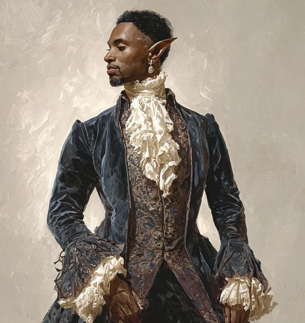

Zuno is the majordomo of House Kath, a position he has held for at least fifteen years. In public he is exactly what he appears to be: a competent, discreet gnome administrator in fine livery, managing a noble household’s affairs.
In private he is a high-level psionic Telepath. His manifestations leave no magical signature detectable by conventional means — an enormous advantage in Ptolus, where mind-affecting magic is wildly illegal among the nobility and regularly tested for.
Zuno’s relationship with Lady Devina Kath is one of control — but delicate control. He nudges. He preserves plausible deniability. He never pushes hard, because nudging too hard triggers her “episodes.” The household runs as he wishes it to run, by his hand on the rudder rather than by overt domination.
Against external threats or problems — people outside the household whose silence, immunity, or disposal is guaranteed — he is much less restrained. Command and the harder telepathy powers belong to that ledger, not to his work within the house.
Intelligence is Zuno’s manifestation ability for psionic powers. Constitution and Intelligence are his proficient saving throws. Gnomish Cunning grants advantage on INT, WIS, and CHA saves.
Zuno cannot be charmed or frightened, magic and psionics cannot put him to sleep, and he has resistance to psychic damage. The condition immunities are the mechanically significant point: enchantment magic and fear effects have no purchase on him whatsoever.
Zuno adds his Intelligence modifier (+5) as a bonus to all Deception, Insight, Intimidation, and Persuasion checks. This stacks with proficiency. He is an extraordinarily perceptive and persuasive operator in conversation, despite his average Charisma score.
Common, Dwarvish, Halfling.
Simple weapons; club, dagger, light crossbow, quarterstaff, sling, spear. Light armour. (Zuno’s combat profile is not melee.)
| Feature | Function |
|---|---|
| Psionic Powers | Manifests powers using Intelligence; powers consume spell slots or generate strain |
| Strain to Maintain | On a failed CON save to maintain concentration on a power, may take strain to keep all concentrated powers active |
| Psionic Specialization (Telepath) | Specialty focus: telepathy powers |
| Telepathy Adept | Rerolls on manifestation dice when learning or manifesting telepathy powers |
| Greater Telepathy | Communicates telepathically at will with any creature within 30 feet, regardless of shared language |
| Shared Connection | Through Greater Telepathy links, linked creatures can hear/smell/feel through one another’s senses |
| Psionic Exertion | Has earned multiple Exertion options: Halting Power, Truth Hurts, Terrifying Power |
| Shared Power | May spend strain to apply a single-target power to a second creature |
| Emotional Intelligence | +INT mod to social skill checks |
| Not in the Face | When a creature fails a save against his power, they cannot attack him until the start of his next turn |
| Psychic Boost | Bonus action, 1/long rest: removes strain equal to proficiency bonus |
| Expanded Power | May spend strain to double the dimensions of an area-of-effect power |
| Psionic Bastion | Charmed/frightened immunity, sleep immunity, psychic resistance |
| Feature | Function |
|---|---|
| Bardic Inspiration | Bonus action; grants a creature within 60 ft. a d6 die to add to a failed d20 test within 1 hour |
| Spellcasting | Bard spells; spellcasting ability is Intelligence (see Spells & Cantrips below) |
| Jack of All Trades | Adds half proficiency to non-proficient ability checks |
| Cutting Words | Reaction; expends a Bardic Inspiration die to reduce an enemy’s attack roll, ability check, or damage roll within 60 ft. |
| Bonus Proficiencies (Lore) | Three additional skill proficiencies (incorporated above) |
| Expertise | Doubled proficiency in two skills (Arcana, History) |
All powers below are present on Zuno’s character sheet. Order is the power’s tier (higher orders cost more / require higher manifestation). Manifestation save DC is governed by INT. Powers are not magic in the conventional sense and are not detected by Detect Magic.
Make a Charisma check to influence or entertain a creature. Touching their mind grants advantage on the check — no additional supernatural force. On a failed check, the creature realises he attempted to use psionics on them and becomes hostile.
Target makes INT save; on failure takes 4d10 psychic damage (at Talent 17 scaling).
Pick a willing creature; the next attack roll against them before the end of his next turn has disadvantage.
Transforms a Tiny mundane object that isn’t carried or worn into another Tiny mundane object of equal or lesser value, for the duration.
Manipulate an object with movable parts, move a ≤5-lb. object up to 30 ft., or make an object attack.
Target makes STR save; on failure is moved 5 ft. in a direction of Zuno’s choice. Target may choose to fail.
Make a Wisdom (Perception) check with advantage to detect hidden creatures, doors, objects, or traps in immediate surroundings.
WIS save (advantage if hostilities). On failure, target is charmed for the duration and regards Zuno as a friendly acquaintance — though not bound to obey. When the power ends, the target knows they were charmed.
Surface thoughts of one visible creature. Grants advantage on Insight and Charisma checks (Deception, Intimidation, Persuasion) made to assess or influence the target.
Up to three creatures make CHA saves. On failure, Zuno knows whenever the creature lies in word, writing, or other communication. He knows which targets succeeded and which failed.
Reactive: when damaged, the attacker makes a WIS save or takes 1d12 psychic damage (half on success). Scales with increased order.
Touching an object, sees a mental image of the last creature to hold it, plus sight and sound of events within 20 ft. of the object in the last 8 hours. Increased order can leave an invisible psionic sensor on the object for 24 hours.
Target makes INT save; on failure, 4d10 psychic damage and the target can only Dash, Disengage, or Dodge on their next turn. Half damage on success, normal turn.
Sends a silent telepathic message of 25 words or fewer to any familiar creature, across any distance and even between planes. Recipient can reply in kind.
WIS save (advantage if hostilities). On a failed save, target is charmed for the duration and Zuno has a telepathic link with them on the same plane. Per the power text, he can use that link to direct the charmed target. On a successful save, he may instead deal 3d10 psychic damage.
WIS save (advantage if hostilities). On failure, target believes a friend or loved one has approached for a pleasant conversation; target stops what they are doing and engages with the imaginary acquaintance for the duration, taking no actions.
Sends a telepathic message — including images of personally witnessed events — to all creatures of his choice within a specified distance and range. Message lasts 1 minute. Recipients can be filtered by creature kind.
20-ft. radius sphere, INT save. On failure: 6d8 psychic damage and target is fractured for 1 minute (save ends at end of turn) — speed halved, disadvantage on checks/attacks/saves, attack rolls against them have advantage.
Names a familiar creature that has passed within 1,000 ft. in the last 24 hours; instantly knows every location that creature visited in that window on this plane, with direction and distance. Increased order extends to 7 days.
Target makes WIS save. On success, 3d10 psychic damage. On failure, target’s proficiency bonus drops to +0, they cannot cast spells, manifest powers, understand language, or communicate intelligibly, for the duration.
Creates a one-way 10-ft.-diameter teleportation gateway in an unoccupied space within range, lasting until the end of his next turn. Destination can be on any plane, but must be known to him.
Zuno’s spell list combines his Bard spellcasting (INT-based), his Forest Gnome racial spells (cantrip and 1st-level), and the Magic Initiate cantrips granted by the Sage background. Spell slots on record: 4 / 2 at 1st and 2nd level.
Writing imbued with this spell appears normal to him and to designated readers, but to anyone else appears as another, unrelated message of his choosing (or as indecipherable scribblings). Combined with his calligrapher’s proficiency, this is a useful tool for sensitive correspondence.
Zuno’s influence over Lady Devina Kath is constant but light-handed. He prefers Influence (skill-augmenting), Read Thoughts, and Veritas for everyday operation — reading rooms, knowing what she actually wants before she asks, steering decisions through suggestion and information advantage rather than overt charming. Make Friends and Harlequin are available if he ever escalates, but escalation triggers her episodes. Plausible deniability is the central virtue of his work inside the house.
Outside the household, his restraint relaxes. Against people who are problems for the family and whose silence, dismissal, or disposal can be arranged — Command, Make Friends, Harlequin, Reminisce, and the harder telepathy powers all become available tools. Psychic damage powers leave no detectable trace; Mindwipe can erase a witness; Fold Space permits silent exfiltration. Anyone the household needs to disappear can.
Psionics in this campaign do not register as magic. Detect Magic, anti-enchantment wards, and Ptolus’s standard tests for charm-affected nobles all return clean readings on Zuno. He cannot be charmed or frightened himself (Psionic Bastion), nor put to sleep, and resists psychic damage. A direct confrontation should be approached as an information problem first, a tactical problem second.